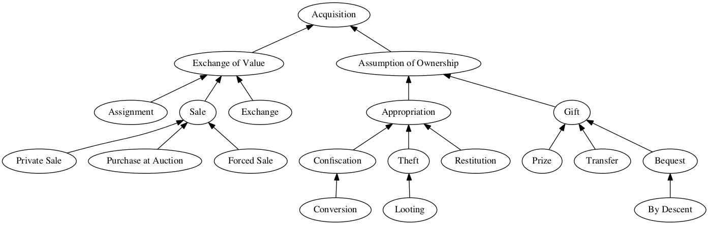
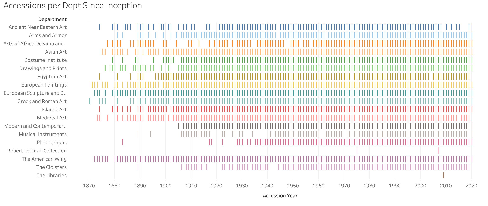
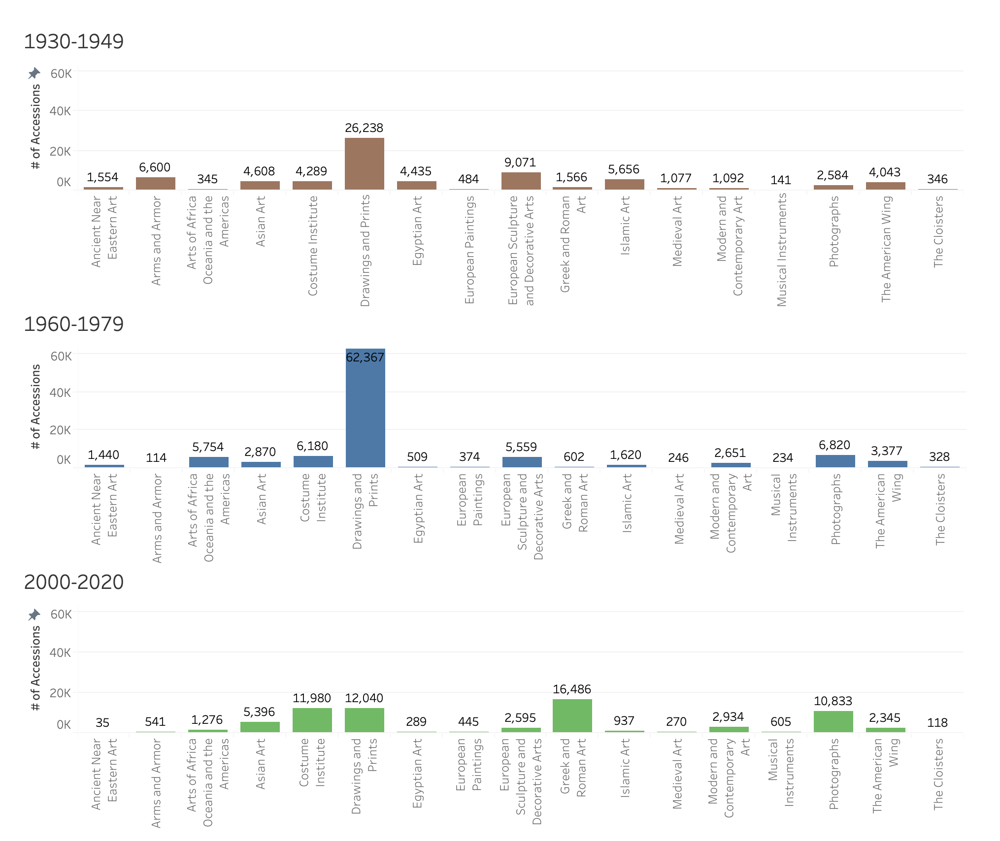
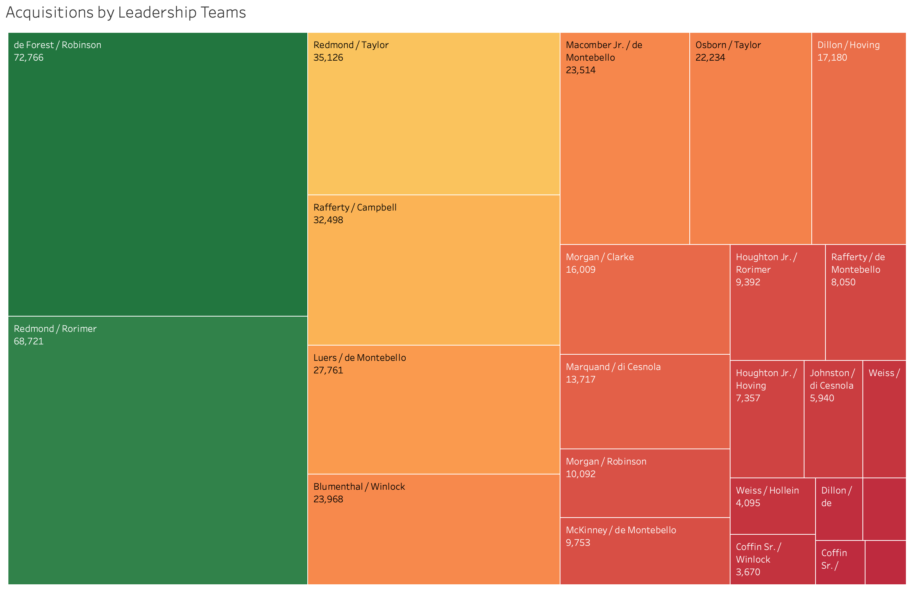
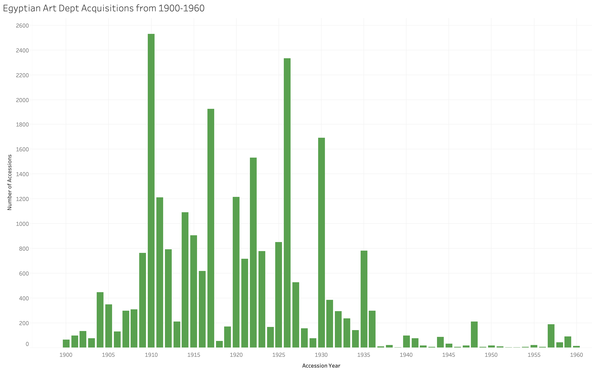
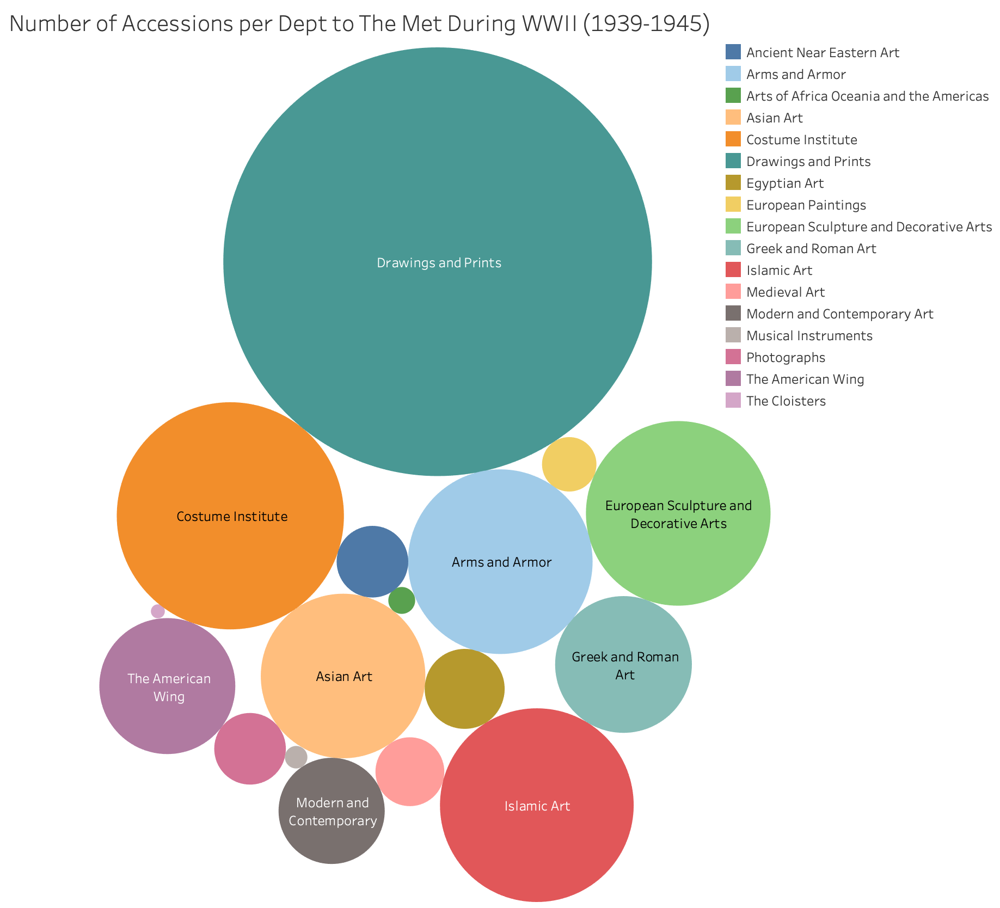
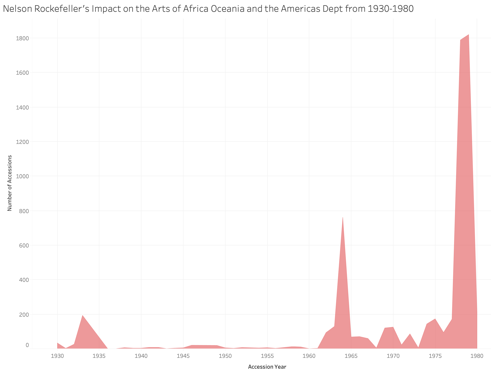
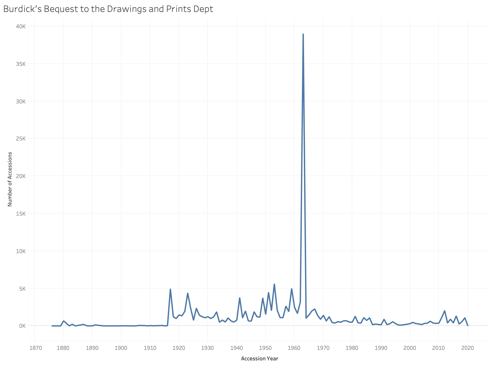

Art, History, and Leadership: Uncovering Stories in The Metropolitan Museum of Art’s Collection
Open data
The Metropolitan Museum of Art released this dataset on February 7, 2017 at the launch of their Open Access Initiative in partnership with Creative Commons, an access and copyright world leader. Compiled over the last three years, this dataset contains more than 470,000 artworks from the past 5,000 years of history. Their website states that cataloguing is ongoing, and their GitHub repository (the source of the CSV file) is updated on a weekly basis, which is supported by the fact that the last commit date prior to the filing of this report was March 14th, 2021. While the direct owner is the museum itself, the Digital Department, Rights and Permissions is listed as the contact department.
Aim and research questions
In order to handle the relatively cumbersome dataset that the Metropolitan Museum of Art provides, the group decided to filter and focus on two particular aspects of the museum’s collection practice. Namely, by focusing on the time period as well as the museum’s president and director, in what we are calling “leadership team,” we aimed to identify decisions that ultimately reflect the culture and values characterizing different eras of The Met’s 150 year history. The three primary questions that have guided us through this project are:
- How has the museum’s acquisition of items changed over time (gift, donation, bequest, purchase, etc)?
- Are there any insights that we can glean by investigating acquisitions under leadership teams or particular directors and presidents of The Metropolitan Museum of Art?
- Do we see certain trends in collection practices from decade to decade under different leadership teams?
Underlying our research efforts is the distinction between the processes of acquisition and accessioning. Both a process and a status, the acquisition followed by accession of objects informs our research in a variety of ways. Acquisitions are objects that are brought initially within the purview of the museum through a variety of methods but are not formally a part of the museum’s collections. When an object formally goes through the accessioning process it is officially a part of the institution’s collection. There are different relationships in regard to care and use when it comes to acquisitions and accessioned objects. Acquisitioned objects are still considered museum property but are more often displayed with an intent to be handled by museum visitors to the extent of breaking, and thus are more easily disposed of and replaced.
To the extent that it is possible, the donor will be notified of the status of the object and of its usage in a non-permanent capacity which can range from; education department hands-on collection, exhibit and design props, or other museum furnishings (Acquisitions & Accessioning). Accessions by the museum are set to a higher standard and thus there is a different expectation in regards to its care and thus are less often handled, when these objects leave the collection they must go through a deaccessioning process that simple acquisitions do not (Ruddell, 2020).
As addressed in our later discussion on cleaning the data set, we chose to look at the terminology used in the CreditLine when describing how an object was initially acquisitioned by the museum as these terms carry political and ethical considerations as well as just another way for us to approach a measurable variable like counts. Within The Met’s dataset the CreditLine listed six terms, Bequest, Donation, Exchanges, Funds, Gifts, and Purchases. The majority of the CreditLine listed Funds and Gifts. Funds are given to an institution and set up as either direct monetary funds or assets to be liquidated or even endowments, they often have a mission to support the institution going towards a particular department or to follow the collecting mission set by the fund manager. One of the biggest funds to date is the Rogers Fund given after his death in 1901, through the liquidation of his assets he willed to set up an endowment for The Met. Luigi Palma di Cesnola, the first Director of The Met at the time commented that “They will give money for buying collections, and for building purposes, because both remain visible monuments of their generosity . . . while endowment funds are invisible and remain unknown to the general public” (Bloom, 2011).
This endowment was used solely for purchasing “rare and desirable art objects” as well as books for the museum’s library. Gifts are similar to donations, in fact donations are often called “gifts-in-kind” and interestingly enough donations only appeared once in the CreditLine. Gifts though similar to donations with no expectation of a formal exchange in value, carry a social price tag with a form of reciprocity expected. Donations are given with charitable intent for a cause and thus given to the institution to fulfill that cause without recognition whereas gifts come with an expectation and formal recognition of the party gifting to the institution and can sometimes carry certain restrictions (Acquisitions & Accessioning). Bequests are objects given through the will of the previous owner following their death, this also can have stipulations read within the deceased’s will. Exchanges and Purchases are just as they suggest, an exchange of objects between institutions or parties and purchases are objects sought out by The Met and purchased directly, although both do try to keep in mind the provenance of the object and its origins. As seen on the chart below, the appropriation of objects refers to the colonial past of many institutions that have cultural heritage and art in their collections that often was stolen or taken as spoils of war. This is one of many reasons why our research questions hold a certain gravity beyond what the dataset can tell you just by glancing at it through an excel spreadsheet.

Stakeholders
In considering the multitude of stakeholders and their backgrounds we found it helpful to draw out specific categories of interest based on our work and what the data tells us in order to clarify who would have an interest in this work overall. The first category to consider is the work or labor that it takes to publish this info, parties that are involved would be primary stakeholders such as The Metropolitan Museum of Art’s Registrar Office, that handles the moving around of art throughout the museum as well as noting when new accessions are made to the museum’s collection. On a similar level, The Metropolitan Museum of Art’s office of Information Technology (IT) that manages the technology systems that run the museum such as the database software the museum uses along with licensing and engagement software.
Two more categories of interest that are implicated in this dataset are education and community engagement. As most institutions rely on local community engagement, this often comes in the form of an educational activity so the local community is a primary stakeholder, whether unwittingly or not they express their approval of the museum’s collection by engaging with the museum’s programming. Another group that is more of a secondary stakeholder would be tourists that flock to NYC and visit the museum.
This group is less permanent than the surrounding local community but has a strong voice by choosing to spend money, or not, at the museum which the institution relies upon. These groups are often international and in a way represented in the collection by way of the cultural heritage the museum has obtained, cultural groups represented within the museum walls have an interest in how their culture and heritage may be presented beyond those walls as well.
The final category we defined was ultimately economics and the relations that are instantiated between it and the ways in which the institution adapts in order to make a profit or even stay afloat. The museum’s investors and board of trustees have a powerful, behind-the-scenes voice on how the museum is run and the direction it decides to take its programming and exhibitions. Even the museum’s collection practices can reflect the values of those trustee members who are managing the museum’s large endowments. At an external level, various NYC Government Departments have an interest in what goes on at The Metropolitan Museum of Art, such as the Department of City Planning, Department of Cultural Affairs, and the New York City Convention and Visitors Bureau. As The Metropolitan Museum of Art is a large building on prime real estate in Central Park, the building has multiple uses for the city and plays a large role in its local economy.
Selecting and cleaning the data
In order to investigate our questions (and bring the data set to a more manageable size), we focused on the following columns from the data originally provided by The Metropolitan Museum of Art; Department, AccessionYear, and CreditLine. Early on in our process, we created our own dataset providing information pertaining to the executive and administrative history of The Metropolitan Museum of Art; this dataset included three variables (President, Director, and LeadershipTeam) which were later joined to our pared down MetObjects dataset using R. We also were able to create dummy variable columns in Excel for each of the different acquisition types in our dataset (though that process, as you will read below, was not as immediate or easy as we would have preferred). While not a part of our dataset per se, we also accessed a complete list of museum exhibition titles from the start of The Met’s history through 2018; these titles helped provide important contextual information about the museum’s activities that otherwise could not have been derived from the dataset itself.
With such a large dataset, we primarily relied upon OpenRefine to carry out our data cleaning and quickly make significant changes to our dataset. In OpenRefine, we cleaned the Accession Year and Department columns by trimming trailing and leading whitespace and ensuring all data entries were in the same format. We also made some changes to the Accession Year column, including removing some of the entries that included day and month. Luckily, the Department column was quite clean and essentially ready to implement in our visualizations and analysis. Finally, unused columns from the original file were removed for greater ease in working with our chosen data.
One of the major issues we came across in tidying the data arose when we were attempting to clean our CreditLine column. Initially, in trying to clean this column, we tried to create an additional column to the right titled “Acquisition Type” in order to parse out key words such as “bequest,” “gift,” “donation,” “purchase of,” as each of these clarified how the object was obtained. In our attempt to clean this column it became apparent that within each cell there were multiples of data that doing a simple VLOOKUP was not going to be able to delimit. By following the row from the farthest left column of “object number,” to the object description, and ultimately to the “CreditLine” column, an “object” under one “object number” could also be a set of objects such as an armor set or tea set.
Another attempt saw us utilizing the conditional formatting tool on Excel to highlight columns with the particular key words that described what would go in the “Acquisition Type” column. While this attempt got us closer than the VLOOKUP tool and solved the issue of multiples of acquisitions being in the same cell, unfortunately the conditional formatting is limited in the number of text and highlight colors. Conditional formatting was also not able to reckon with cells that contained objects that were both gifts and purchases from different groups, being that this info was in the same cell and couldn’t be highlighted twice as well as there being no clear order to which the objects were listed.
After cleaning our data, we found that dividing the data into three specific time periods allowed us to focus on specific trends and outliers. We chose to focus on the following sections: 1930-1949, 1960-1979, and 2000-2020. These time periods were situated around large and impactful world events such as the Great Depression, World War II, high periods of racial tensions, and the global launch of the internet, which prompted us to think that a global institution such as The Met might have been impacted by these events. We analyzed our data through this lens of time and historical events, which led to rich discoveries, however we acknowledge that the way we approached this data impacted our findings and that there is more to be uncovered in this dataset.
Data visualization

In order to get an idea of how our data looked in general and across these timeframes, we made multiple visualizations of the data, as well as specific visualizations for each department. This allowed us to find and identify outliers and trends that called for further investigation.

The above visualization shows the number of accessions to each department during particular eras of the museum’s history. In the visualization, you can see that the first two time periods of interest for us, 1930-1949 and 1960-1979, were greatly focused on the Drawing and Prints department while the last time period (2000-2020) was more equally distributed between the Greek and Roman Art, Drawings and Prints, Costume Institute, and the Photographs departments.
Stories from the collection
At the heart of this project, we wanted to see if individual leaders’ interests or key time periods in American history could provide a sense of direct linkage to the collection practices at the museum. Through our work investigating both the collection data made available by The Met, as well as additional documentation, reporting, and stories about the museum’s activities throughout its history, we’ve found that the crafting of a legacy at an institution like The Met is a complex and complicated process. Acquisitions – either of individual pieces or more general trends over time – certainly play a role in defining legacy; however, acquisitions do not play the only role in that process.
Looking at the activities of the larger museum, the exhibitions put on during individual leaders’ tenures, and decisions made concerning the museum and its larger mission and goals may play as much or more of a role than acquisitions on their own. In our investigations, we have been able to find a number of stories that assist in explaining the collection data which sits at the core of the project. We have included some of these stories below.

Herbert Eustice Winlock
Herbert Eustice Winlock was considered “one of the world’s most distinguished Egyptologists,” and he had a storied career with The Met’s Egyptian Department and as its director (“Dr. Winlock Dead; Archaeologist, 65,” 1950). Starting in 1906 after being recruited to the Museum’s Egyptian Department fresh out of Harvard, Winlock essentially split his time between Egypt and New York City over the course of the next 25 years, dedicating his life largely to The Met’s Egyptian excavations. In 1929, Winlock was promoted to curator of the Egyptian department, and shortly thereafter in 1932, he became the fourth director of The Metropolitan Museum of Art. Despite a career-long focus on Ancient Egypt, Winlock’s directorship curiously began the start of a general decline in Egyptian acquisitions – a fact which stands in stark contrast to the spikes in Egyptian artifact acquisitions of his directorial predecessor, Edward Robinson.

The Met, however, did publicly show its support of its Egyptian collection and acquisitions throughout Winlock’s tenure as director, holding five special exhibitions on Egyptian acquisitions in the same number of years. It would take the Museum nearly 35 years to hold the same number of special exhibitions dedicated to Ancient Egypt after his tenure. In this particular example, we can see how acquisitions may not be the only way that leaders of the Met could assert their personal interests and professional priorities and possibly shape their legacy within the institution. In the early-to-mid-2000s, The Met held two exhibitions specifically highlighting photographs of the discovery of Tutankhamun’s tomb; it’s highly likely that even modern visitors of The Met were able to see Winlock fully immersed in the work he loved as he was present at the opening of the tomb in 1922.
World War II and the Post-War Era
As we explored major historical events we compared and contrasted the dataset by looking at trends during the years of these significant events. Although we expected to encounter explicit trends the dataset doesn’t necessarily reflect those expectations and in fact by comparing the dataset from the GitHub with data we collated from outside sources such as the list of exhibitions we were able to see that this relationship was not one for one.
There were no significant trends or outliers within particular departments during World War II. It is important to note how external factors can impact the work expected of museum practitioners who often sit on objects thus delaying the exact time schedule for when objects officially came into the collection.

During World War II, Francis Henry Taylor, The Met’s fifth director, faced the daunting challenges of making the museum a safe, welcoming environment and safeguarding the priceless pieces of art and cultural heritage in the museum’s collection. In the early days of the war, Taylor prioritized the protection of the museum’s assets, ordering that over 15,000 pieces of the collection be put into a safe storage facility just outside of Philadelphia. Hampered by both a reduced collection of displayable assets and a general limitation of available resources at the museum, Taylor made admission to The Met free to attract visitors to the museum and regularly brought in musicians to perform concerts with restored instruments for guests. Making the museum space accessible was an important act of rebellion for Taylor, and he once stated, “We preserve in our galleries the very things which the Nazis have destroyed and for which we are fighting” (Clarkson et al., 2019). During the war, The Met under Taylor’s direction hosted a number of war-time related exhibitions, including “Winning the Peace” (1942), “The Soviet Artist in the War” (1943), and “Work by Soldier-Artists” (1944).
However, some of the most prominent exhibitions staged during his tenure at the museum were put on as a result of difficulties surrounding the return of pieces to Post-War Europe, including “Paintings from the Berlin Museums” (1948), “Renaissance Drawings and Prints” (1946), “Van Gogh: Paintings and Drawings” (1949), and “Art Treasures from the Vienna Collections” (1950). In the latter years of the war, The Met also played a significant role in the development of the Monuments, Fine Arts, and Archives program. The members of this program, popularly known as the Monuments Men, were tasked with protecting artworks, archives, and monuments of historical and cultural significance and securing and returning artworks looted by the Nazis. Many of the Monuments Men either were staff members at The Met or joined the museum after the war. One of the most prominent members of this group was James Rorimer, who had been a curator of medieval art at The Met and had played a critical role in the development of The Met Cloisters (Bowling & Moske, 2014). He eventually would become The Met’s sixth director in 1955. A number of exhibitions were staged at The Met following the conclusion of the war using photographs and notes he took during his time in Europe, including “The War’s Toll on Italian Art” (1946), “Fine Arts Under Fire” (1946), “Medieval Monuments During World War II” (1946), and “Paintings Looted from Holland: Returned through the Efforts of the Armed Forces” (1947).
Nelson Rockefeller
Nelson Rockefeller was the son of John. D Rockefeller Jr and Abby Aldrich Rockefeller, both of whom were particularly important and prominent art philanthropists in New York City. Outside of his work in the art world, Nelson Rockefeller served as Governor of New York from 1959 to 1973 and as Vice President of the United States under Gerald Ford from 1974-1977 following the resignation of Richard Nixon. He was extremely involved in New York’s art scene, and served in a number of capacities at the Museum of Modern Art and The Metropolitan Museum of Art. He was involved with The Met as a board member following his graduation from Dartmouth college in 1930, but his advocacy for Pre-Columbian and non-Western art was largely shut down by The Met’s fourth director, Herbert Eustice Winlock (The Nelson A. Rockefeller Vision: In Pursuit of the Best in the Arts of Africa, Oceania, and the Americas, October 8, 2013–October 5, 2014). Rockefeller continued to develop his interest in both western and non-western art, and his passion for collecting eventually extended to modern art, Far Eastern sculpture and painting, and Precolumbian, South Sea Islands, and African art. In 1954, he founded The Museum of Indigenous Art, which would later come to be known as The Museum of Primitive Art.
Starting in the late-1960s, Rockefeller and members of his museum’s administration began negotiations with Thomas Hoving, the seventh Director of The Met, for a promised gift of the collection to The Met and major exhibition called “Art of Oceania, Africa, and the Americas from the Museum of Primitive Art.” In 1974, all assets and employees from The Museum of Primitive Art transferred over to the Michael C. Rockefeller collection under The Met administration; the collection itself was named after Rockefeller’s son, who tragically and mysteriously died in 1961 while abroad in the Asmat region of Netherlands New Guinea.
With Nelson Rockefeller’s death in 1979, the assets officially fell under ownership of The Met – which is the spike shown below. In 1982, The Michael C. Rockefeller wing was opened to the public at The Met. And in 2013 and 2014, the Met celebrated the 60th anniversary of the opening of the Museum of Primitive Art, showcasing the ultimate fulfillment of Nelson Rockefeller’s vision for non-Western art (and his triumph over initially being rebuffed by The Met’s previous museum administrators).

Jefferson R. Burdick
One of the earliest points of investigation that we came across when exploring our data was a massive spike in accessions to the Drawings and Prints Department of The Met that occurred in 1963. Digging into the data and investigating our Credit Line information, we were able to see that this spike was due to a major bequest to the museum of more than 37,000 items by a single man: Jefferson R. Burdick.

Burdick is largely regarded as “The Father of Card Collectors”, and even his tombstone reads “One of the Greatest Card Collectors of All Time” (Belson, 2012). He founded and ran The American Card Catalog, which is still the primary reference book for American baseball cards through the early-1930s and is a hugely important resource for American printed materials and culture from the 19th and early 20th century. He was known for essentially being a collector’s collector, and he amassed a collection of over 300,000 printed materials over his lifetime – about a tenth of which was baseball cards. Due to ill health, he began making plans to leave his baseball card collection to The Met in 1947. In order for him to leave the collection at the museum The Met administration had one condition: he had to catalog what he planned to give as a gift before the museum would officially accept the collection. Over time, he would send in boxes of fully cataloged materials, and in the late 1950s, he moved his desk from his home into the Prints department itself and started working from the museum. His death in 1963, and the resulting bequest of his large collection, is the spike that we see in our visualizations. With the 50th anniversary of his death in 2013, The Met put on a number of exhibitions featuring his cards, including “The Jefferson R. Burdick Collection of Baseball Cards” and “A Sport for Every Girl: Women and Sports in the Collection of Jefferson Burdick.” Today, a small permanent exhibition with frequently rotating pieces of his collection exists just outside of the museum’s American Wing.
The Met and its communities
The Met has long been a single institution serving and representing multiple communities; it uniquely stands as a landmark cultural institution for New Yorkers, Americans, and art lovers around the world. Its exhibitions, in particular, reflect not only these communities but the specific moments in time in which they occur. Tragedies like the terrorist attacks that occurred on September 11th, 2001 were devastating events for both New York and the United States as a whole, and The Met has responded the impacts of this tragic event for its home city and the nation in exhibitions such as “New York, New York: Photographs from the Collection” (2002) and “The 9/11 Peace Story Quilt” (2011). The Met has looked outside of its city’s limits to reveal the hardships and experiences of its fellow Americans, addressing catastrophic events like the devastation of Hurricane Katrina in Louisiana in “New Orleans after the Flood: Photographs by Robert Polidori” (2006). And The Met has not been afraid to tackle important social issues throughout its history, looking at and looking back on topics like the Civil Rights Movement (i.e. “Harlem on My Mind: Cultural Capital of Black America 1900-1968” [1969]) and how they affected the museum’s served communities. But The Met has also relished its local, national, and international reaches to celebrate, highlighting joyous events like the American Bicentennial Anniversary (e.g. “Salute to America,” “American Ephemera,” “Bicentennial Banners,” “Liberty or Death” etc) or the Olympics (e.g. “To Celebrate the Winter Olympics” [1980], “The Games in Ancient Athens: A Special Presentation to Celebrate the 2004 Olympics”). Whether in times of joy or in times of pain, in times of war or in times of peace, in times of prosperity or in times of suffering, The Met stands equally as an access point to both its immediate communities and the world around it, impacted by and adjusting to the history constantly happening around it.
Conclusion
At the beginning of this project our group considered The Met dataset too cumbersome and lengthy to even grapple with and we had plans to work with a smaller dataset from another museum. The context of this project, being a course offered in the Information Studies Department at UCLA titled “Community Data,” challenged our group to be able to cogently tell a story through the data with data visualizations. A tough lesson that started us on our data journey was getting over the initial wall of data that seemed insurmountable. Through this course, with the direction of Prof. Gallati, each week we “chomped at the bit” and deconstructed our dataset sifting through particular columns and trying to create preliminary visualizations to find any story within.
Eventually we came back to the title of the course, with its focus on a community, and began to think through what that community was and what their investment in this dataset would be. Is it the museum guests that visit The Met everyday? Is it the Museum’s staff and board of trustees that run and support The Met itself? Is it the New York City municipal government with its various departments that care greatly about what happens on the slice of prime real estate on Central Park that The Met occupies? Eventually we realized that the challenge is to consider any and all possible stakeholders and so we landed on the one thing that makes a museum a worthwhile place to visit, the collection itself and how it got to where it is today.
As we cleaned up the CreditLine, and challenged our own assumptions about what we would find, we came to the realization that the greater story resided in the ways in which the museum’s practices of collecting reflected the sentiments that characterized the temporal context in which the collecting took place. While it is important to note how the zeitgeist of each eras reflects the values and morals of a society, the museum played and continues to play a role in educating and challenging those who bear witness to its collection to grapple with the exigencies of the world around them.
The greater story and lesson we learned through the process of this course and the development of this project is that there is no single story, and that if humans are not neutral neither is the data; the power comes from how that data is wielded and how impactful it is to the communities of stakeholders that invest in it or divest from it.
About
This project was developed as part of the INFSTD289 Community Data class taught by Timothy Gallati in Winter 2021 at University of California, Los Angeles.
The team, in alphabetical order:
Madison Faulis is pursuing an MLIS degree from the department of Information Studies at UCLA with a specialization in Informatics and a focus on Digital Humanities and user experience. She has a B.A. in Economics with a minor in Digital Humanities from UCLA.
Jarett Hartman is pursuing an MLIS degree from the department of Information Studies at UCLA. His interests lie in metadata and data governance. Jarett has a B.A. in Economics with an emphasis on Law & Ethics from the University of San Diego.
Jade Levandofsky is pursuing an MLIS degree from the department of Information Studies at UCLA. Their research focuses on Museum Open Access projects and the ethical considerations in the digital-presentation of cultural heritage. Jade has a BA in Anthropology with a focus on socio-linguistics from American University.
Pietro Santachiara is the Bernard and Martin Breslauer Fellow and a PhD student in the department of Information Studies at UCLA. His research deals with knowledge organization and modelling, classification of cultural heritage artifacts, and digital humanities.
Bibliography
Acquisition Method Vocabulary. (n.d.). Art Tracks; A Project of Carnegie Museum of Art. Retrieved April 15, 2021, from museumprovenance.org/reference/acquisition_methods
Acquisitions & Accessioning. (n.d.). University of Alaska, Museum of The North. Retrieved April 15, 2021, from uaf.edu/museum/collections/ethno/policies/acquisitions
Belson, K. (2012, May 22). A Hobby to Many, Card Collecting Was Life’s Work for One Man. The New York Times. nytimes.com
Bloom, J. (2011, July 1). This Weekend in Met History: July 2. The Metropolitan Museum of Art. metmuseum.org
Bowling, M., & Moske, J. (2014, January 31). In the Footsteps of the Monuments Men: Traces from the Archives at the Metropolitan Museum. The Metropolitan Museum of Art. metmuseum.org
Clarkson, A. J., Dorlester, A., & Moske, J. (2019). Francis Henry Taylor records, 1892-1956 (bulk 1940-1955). The Metropolitan Museum of Art Archives. libmma.org
Delbourgo, J. (2019). Collecting The World: Hans Sloane and The Origins of The British Museum. Belknap Harvard.
Dr. Winlock Dead; Archaeologist, 65. (1950, January 27). The New York Times. nytimes.com
Greenwald, D. (2020, April 27). What Can Data Teach Us About Museum Collections? American Alliance of Museums. aam-us.org
Roeder, O. (2017, April 6). An Excavation Of One Of The World’s Greatest Art Collections. FiveThirtyEight. fivethirtyeight.com
Ruddell, J. T. (2020, October 1). Powerful, Intuitive Museum & Private Collections Management. CatalogIt. catalogit.app
Simon, N. (2010). The Participatory Museum. Museum 2.0.
The Metropolitan Museum of Art Special Exhibitions, 1870—2018. (2019). The Metropolitan Museum of Art Archives. libmma.org
The Nelson A. Rockefeller Vision: In Pursuit of the Best in the Arts of Africa, Oceania, and the Americas, October 8, 2013–October 5, 2014. (n.d.). The Metropolitan Museum of Art. Retrieved April 15, 2021, from metmuseum.org